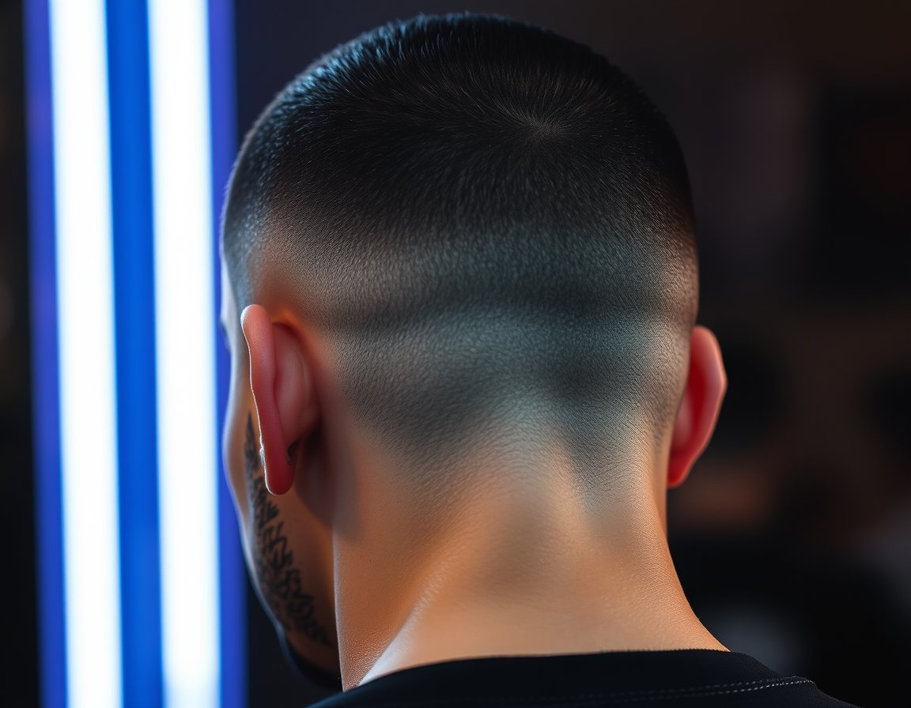
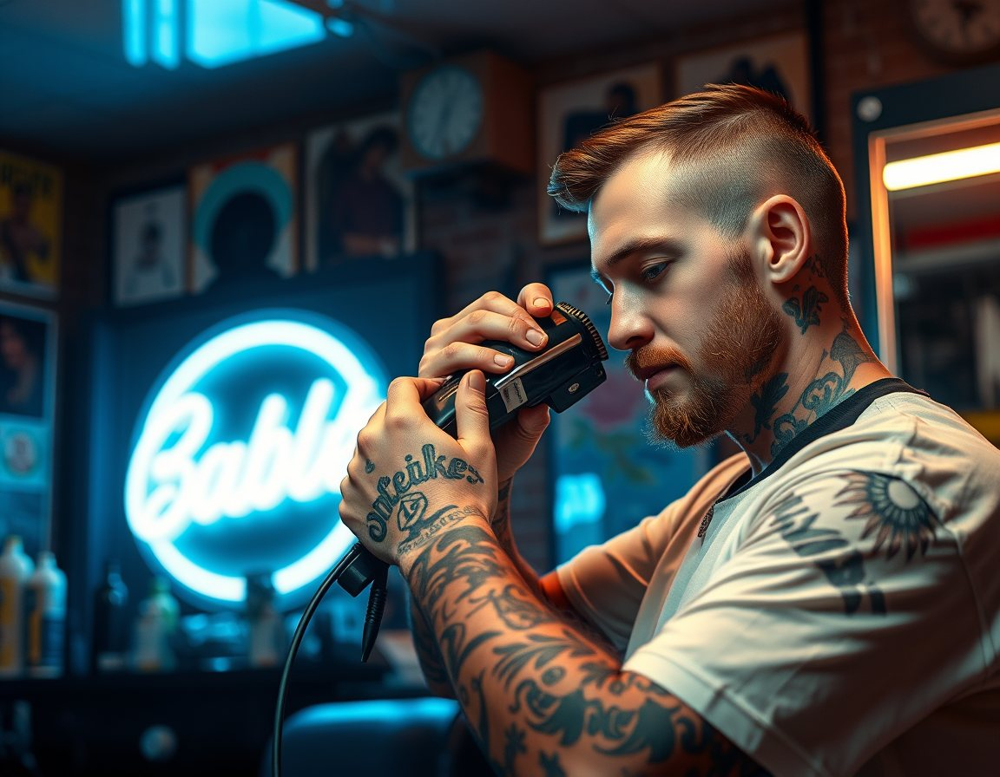

Saç bir sanat işi.
Fade, sanatsal kesim, cilt bakımı ve manikür. Sahnede, festivalde ve basında görülen işler şimdi tek sayfada; koltuğunuz ise yalnızca randevuyla.

Temsilî görsel · yayında kendi işlerinizKoltukta ne var?
Başlıklar Instagram'daki öne çıkanlarınızdan alındı. Yayında her hizmetin altında kendi çalışmalarınızın fotoğrafları ve süresi durur.

Salonun dışında da.
11 bini aşkın takipçinin Instagram'da gördüğü sahne ve festival işleri, Google'dan gelen yeni müşteriye de görünsün. Yayında her başlık kendi fotoğraf ve videolarıyla açılır.
Üç adımda koltukta.
Randevunuz zaten salonrandevu üzerinden işliyor; sayfa yalnızca yolu kısaltır. Google profilinizdeki bağlantı da buraya bakar.
Fade, sanatsal kesim, bakım ya da manikür.
Takvim canlı; dolu saatler görünmez.
Fatih Mah. 1925 Sk. No:87/B, Pamukkale. Pazar kapalı.
Kesim güzel mi? Google'a yazın.
Randevu sisteminizde binin üzerinde değerlendirme var; Google'da ise çok daha azı görünüyor. Yeni müşteri önce Google'a bakar. Bu düğme, kesimden sonra müşterinin tek dokunuşla Google'da yorum bırakmasını sağlar (yayında doğrudan yorum penceresi açılır).
Fatih Mahallesi.
- Adres
- Fatih Mah. 1925 Sk. No:87/B, Pamukkale / Denizli
- Çalışma
- Yalnız randevuyla · Pazar kapalı
- @huseyincaybas20